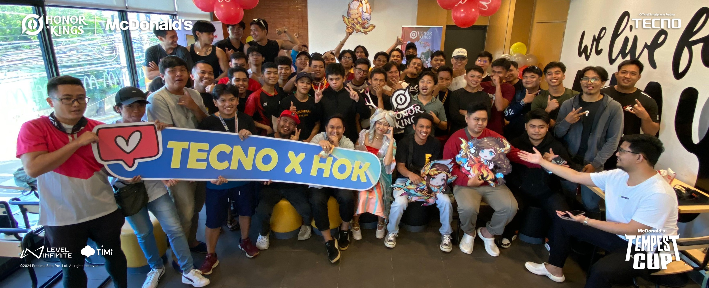

About Us
Welcome to GameOrg.GG, the ultimate destination for esports enthusiasts! Our mission is to connect the gaming community by providing up-to-date coverage on tournaments, special events, and team news, with a focus on the vibrant Cebu esports scene. We are passionate about esports and committed to delivering high-quality content that keeps you informed and engaged. At GameOrg.GG, we spotlight local teams, celebrate their victories, and follow their journey through the competitive landscape. Whether it's breaking news, tournament schedules, or in-depth features on your favorite teams, we strive to bring you closer to the action. Our platform is designed for gamers, by gamers. We aim to foster a thriving community where players, fans, and teams can interact, share, and grow together. Stay with us for all things esports—because at GameOrg.GG, the game never stops.